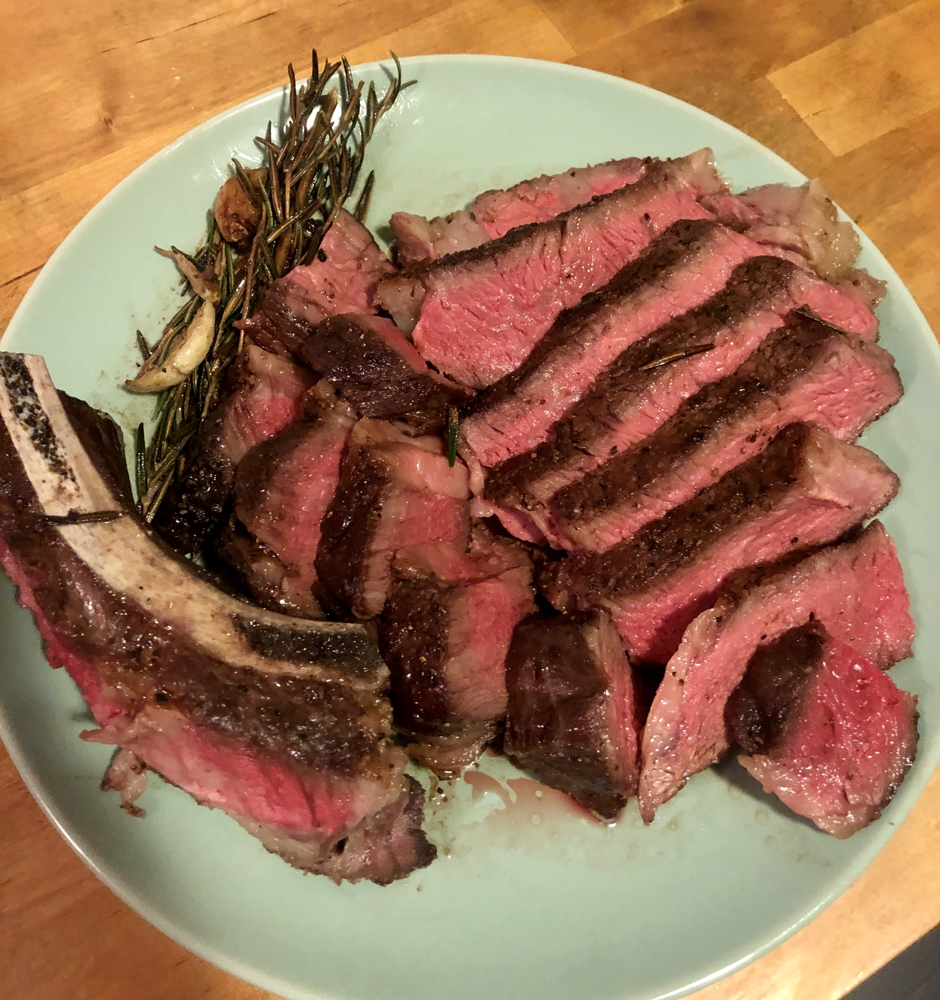

Reverse Seared Steak

Description
This is my preferred way to cook a steak. It's a really remarkable method, and if you're
looking for a steak that's perfectly medium-rare from edge to edge, with a crisp crust,
there's no better technique that I know of.
When you're cooking steak at a high temperature, you have a very narrow window of time
in which the center of that steak is a perfect medium-rare. A minute too short, and
your steak is raw; a minute too long, and it's overcooked. With slow cooking, that
window of time is greatly expanded, making it much easier to nail the right temperature
time after time.
Ingredients
- Thick-cut beef steak(s), at least 1 1/2 to 2 inches thick, such as ribeye,
strip, porterhouse, T-bone, tri-tip, or filet mignon
- Kosher salt and freshly ground black pepper
- Vegetable oil
- 1 tablespoon unsalted butter
Steps
- Generously season steak(s) all over with salt and pepper. If desired, set
steak(s) on a wire rack set in a rimmed baking sheet and refrigerate, uncovered,
overnight to dry out the exterior. Otherwise, proceed with the next step.
- Set steak(s) on a wire rack set in a rimmed baking sheet. Preheat oven to anywhere
between 250°F.
- Place steak(s) in the oven and cook until an instant-read thermometer registers
105°F for rare, 115°F for medium-rare. This will take about 20 minutes, but check often.
- Just before steak(s) come out of the oven, add 1 tablespoon (15ml) oil to a cast iron,
carbon steel, or heavy stainless steel skillet and heat over high heat until smoking.
Add steak(s) and butter to skillet and cook until each side is well browned, about 45
seconds per side. Using tongs, hold steak(s) sideways to sear edges.
- Rest 5-10 minutes, serve with your favortie flaky sea salt.